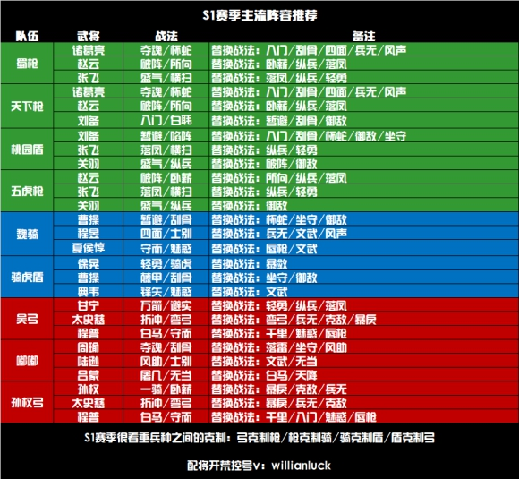

三国志战略版 S1 开局攻略
一、入门攻略
1. 主公选择
赛季开局提供4种主公类型：明主、贤主、英主、霸主。
回答路线参考：
- 明主：11133
- 贤主：33333
- 英主：11111
- 霸主：11121
主公属性对比
| 类型 | 奖励道具 | 属性加成 |
|---|---|---|
| 明主 | 三文矛 | 武力 +4，统率 +6 |
| 贤主 | 50000铜币 | 速度 +6 |
| 英主 | 1300战法点 | 智力 +6 |
| 霸主 | 大宛马、服方尊 | 速度 +4，武力 +6 |
推荐选择： 贤主或英主
- 贤主提供50000铜币，可换1000战法点及蓝将，甚至可能获得紫将。
- 英主提供战法点，适合战法升级需求。
2. 开荒武将推荐
- 买开局号：推荐赵云、张飞、刘备、夏侯惇。
- 首充开局：
- 68元：孙坚 + 孙策
- 6元：孙坚 + 关平
- 0氪党：关平 + 任意紫将/蓝将（开荒速度稍慢）。
3. 开荒节奏
- 将战法点优先用于开荒武将，提升效率。
- 武将到5级解锁第二战法，可先用B级战法过渡（需传承蓝将并演练）。
- 武将5级、兵力1000后开始打3级地，优先升级武将和获取资源。
- 武将10级后分配属性点，侦察周围4级地并准备开荒。
- 开荒期间打木牛流马资源道具，并合理分配资源与兵力。
- 武将20级后解锁第三战法与装备系统，准备开5级地。
- 主城升7级君王殿，确保队伍能力过渡至高级土地。
- 武将30级主力队伍即可开6级地，优先打资源地。
4. 前期发展
- 跟随主线任务
- 开荒时期，建议各位主公可以紧跟主线任务。
- 主线任务已经梳理了最合理的升级路线，一开始跟着主线升级设施，可以最大限度减少资源的浪费。
- 加入同盟
- 加入同盟后会有同盟资源产量增益，对前期的发展会有较大帮助。
- 委任内政官
- 随着任务的进行，委任功能会开放。
- 有些武将自带内政战法，委任这些武将作为内政官时，可以有效提升城内各类资源的产量。
- 名声、势力值
- 名声决定了可攻占土地的上限。
- 名声每增加100点，领地上限可以增加1块。
- 势力值是实力的象征，可以通过占领高级领地、建造个人建筑等方式提升。
- 策书
- 策书可用于屯田、讨伐贼寇、建立营帐等，策书每小时回复一个。
- 前期资源匮乏的情况下，不建议使用策书讨伐野怪，应尽量屯当前最高等级的资源田。
5. 资源获取
一、资源是否可以进行买卖
在游戏中，四项基础资源（木材、石料、粮食、铁矿）无法通过金锥和玉璧进行购买。
玩家可以购买策书，策书具有多种功能，包括屯田、筑城、讨伐、营帐和箭塔。每个玩家每天最多可以购买三次策书。
二、基础资源主要获取方式
-
资源建筑
游戏中，主城和分城均拥有四个资源建筑，分别是农场、采石场、伐木场和冶铁台。每个资源建筑能够提升相应的资源产量。建议在前期资源充足的情况下，根据任务指引升级相应的资源建筑。
-
资源地
资源地是游戏中获取资源的最基本手段，每占领一块资源地，都能根据其等级提升相应的资源产量。不同等级的资源地提供不同的产量，具体如下：
资源地等级 木材 铁矿 石料 粮食 1级 200 200 200 200 2级 300 300 300 300 3级 400 400 400 400 4级 600 600 600 600 5级 1300 1300 1300 1300 6级 1500 1500 1500 1500 7级 1700 1700 1700 1700 8级 1900 1900 1900 1900 9级 2100 2100 2100 2100 10级 2300 2300 2300 2300 从表格中可以看出，5级资源地的资源产量相比4级有显著提升。前四级的资源产量差距较小，而5级资源地则应尽量占领以提升资源产量。至于6至10级的资源地，尽管资源产量有所提升，但相对较为有限，建议根据实际需求进行攻占。
三、资源是否可以进行抢夺
游戏中无法直接抢夺他人资源。如果你对其他玩家的资源地发起进攻并获胜，可以占领该资源地，从而增加自己的资源产量。如果对其他玩家的主城发起进攻并获胜，可以俘虏对方，但无法获取对方仓库中的资源。即使对方选择缴纳资源解除俘虏，资源也将由同盟获取，而非个人。
四、资源用完了如何获取
-
集市交易
如果缺少某一单一资源而其他资源充足，可以通过升级君王殿至5级解锁集市功能。在政厅点击贸易，可以依照一定比例将其他资源转化为所需的资源。
-
屯田
选择合适的资源地，并派遣一支闲置队伍进行屯田。每次屯田消耗3本策书，时间为10分钟，可以获得与资源地类型相对应的资源。例如，石料资源地的屯田只会产出石料。资源地等级越高，屯田获得的资源越多。
-
等待
根据资源产量，资源会自动产出。玩家可以等待自然产出。
-
木牛流马
木牛流马每天在8点、14点和20点刷新，玩家可通过战胜木牛流马获得一定的资源和预备兵。如果资源不足，切记不要忘记去截击木牛流马。
-
讨伐贼寇
在霸业达到一定阶段后，地图上会刷新一些贼寇，玩家可以消耗一本策书进行讨伐。战胜5级贼寇可以获得10000资源，但奖励资源的类型是随机的。
二、进阶攻略
-
升级节奏：
- 20~30级：扫荡5级地
- 30~40级：扫荡6级地
- 35~49级：扫荡7级地
- 40~49级：扫荡8级地
-
加入同盟：
- 同盟玩法能增强互动性，包括打城、迁城、对抗等活动。
-
俘虏解脱方式：
- 缴纳资源
- 同盟解救
- 紧急撤离（放弃所有领地）
-
前期资源管理：
- 6级地建造币厂，升到2-3级即可。
- 每日铜币强征以加速战法升级。
-
藏兵技巧：
- 通过调整队伍位置藏兵
假设您的主城有 5 个军舍位置，而您的主力队伍有 3 队。 将这 3 队的主将分别移动到最后两个位置的副将位上，这样当敌人攻打您的主城时，主力队伍不会被直接攻击到。
- 通过驻守终止藏兵
在主城中，将部队设置为“驻守”状态，然后点击“终止驻守”。 此时，队伍会停留在主城外表面上看仍在主城范围内，但实际上不会参与主城战斗，敌人也无法直接攻击到这些部队。
三、S1赛季主流阵容推荐

四、S1结束前需做的准备（备战S2）
-
囤积资源：
- 满红紫卡/蓝卡
- 3000金珠用于换战法点，1000金珠用于妙升建筑。
-
抽卡与改名：
- 霸业割据包：8000金珠（20次抽奖，10次保底1橙）。
- 改名：500玉璧（赛季开始前3天可改名）。
-
赛季重置内容：
- 玉璧、金珠、装备、材料、武将、战法保留。
- 其余内容（战法点、铜币、资源等）重置。
-
赛季环境变化：
- S2由3~4个区合并，土地资源更加紧张。
- S1末期可多打野怪，准备装备。
-
核心事项：
- 转区：花费500金珠可在合并区间转区。
- S2限定武将：如孙尚香、司马懿、张辽，仅通过成就奖励或活动获取。
- 为S2兑换战法点准备足够武将。